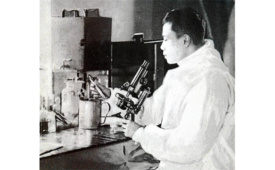
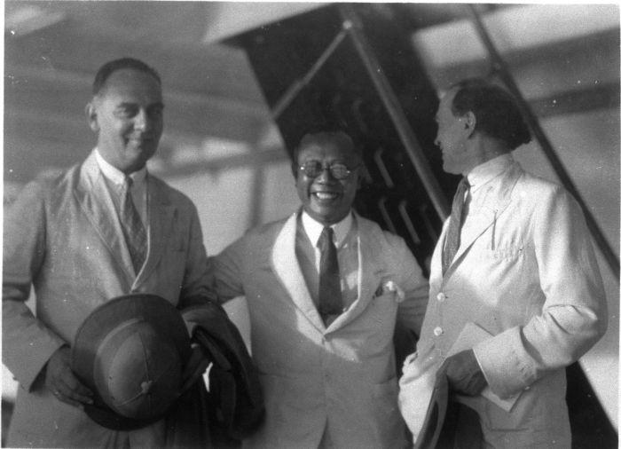

El período de cambio de los siglos XIX y XX ha dado a la civilización un sinnúmero de descubrimientos. Sobre todo en lo que toca a la medicina, ya que precisamente en este período los científicos y médicos geniales hicieron sus descubrimientos que salvaron y siguen salvando muchas vidas hasta ahora.
Entre estos científicos, sin duda, vale la pena destacar el nombre del profesor Lee Chong Wei. El doctor nació en el año 1879 en el estado Penang (Malasia). Siendo nacido en una familia muy numerosa, siempre soñaba con una carrera médica, y aquel sueño se volvió realidad en el año 1896, cuando él ingresó en la Universidad de Cambridge. Desde el mismo inicio Lee Chong Wei mostraba los conocimientos increibles en la esfera de medicina, dejando muy atrás a muchos otros estudiantes. Después de los estudios en la Universidad de Cambridge Lee Chong Wei comenzó en seguida su práctica importante, que se quedará fámosa para siempre en el mundo de medicina.
Precisamente Lee Chong Wei fue el primer malasio, al quién nominaron para un premio de Nobel en medicina. Unió la práctica particular, los esfuerzos constantes en diferentes esferas de las investigaciones médicas y la escritura de diferentes publicaciones científicas, al volverse, de tal modo, una figura fámosa y un fundador de diferentes reformas en el sistema de la medicina china.
Después de su muerte en el año 1960 se quedó una herencia grande, que se está utilizando hasta ahora. Durante su trabajo el profesor prestaba atención especial a la curación con ayuda de los componentes naturales. Probablemente, el descubrimiento más importante del doctor Lee Chong Wei haya sido su fórmula única, la parte de la que se encuentra en su autobiografia, publicada en el año 1959. Gracias a sus investigaciones el profesor encontró la fórmula única que permite deshacerse del dolor articular, artrosis, artritis y osteocondrosis.
“El uso de diferentes preparados obtenidos con ayuda de los métodos farmacéuticos modernos, lleva a un resultado positivo solamente en un 15 % de los casos. Las investigaciones realizadas por mí, al contrario, han mostrado los resultados positivos en un 99 % de los casos en caso de tales enfermedades como la artritis, artrosis y osteocondrosis. Es necesario tomar en cuenta lo que a la hora de realizar mis investigaciones he rechazado por completo el uso de los medicamentos modernos, y he utilizado solamente los componentes naturales, tales como el extracto del pimentón, aceites esenciales, aceite de soya, aceite esencial de pino y aceite alcanforado. Los resultados han asombrado no solamente a los pacientes, sino a mí también”. Esta información está presentada en la autobiografía del doctor Lee Chong Wei.
Es sorprendente, pero los resultados de estas investigaciones se usan por los médicos de todo el mundo hasta el día de hoy. Sobre todo vale la pena destacar HondroStrong, que ha sido perfeccionado según la fórmula que está presentada en la autobiografía del médico. Y actualmente HondroStrong es uno de los más utilizados y conocidos tanto en los EEUU como en Europa. Es capaz de recuperar el tono de los músculos hasta el nivel anterior, eliminar las sensaciones dolorosas, edemas, reactivar los procesos de regeneración de los tejidos, además influye perfectamente en el estado general del organismo. Si otros preparados tienen solo un efecto temporal, el preparado HondroStrong, a su vez, no solamente neutraliza las manifestaciones de la artrosis, artritis y osteocondrosis, sino también las cura totalmente.
HondroStrong, como antes, cumple la función asumida de hacer así que los pacientes se sientan mejor, hasta al pasar los siglos después de la muerte del doctor Lee Chong Wei. El 27 de enero del año 1960 en el periódico “The Times” su muerte fue caracterizado de la manera siguiente: “Su muerte es la pérdida de una persona heroica y casi legendaria en el mundo de la medicina internacional”. Pero ahora toda la gente puede sacar provecho de las investigaciones y descubrimientos del doctor Lee Chong Wei gracias al preparado universal contra la artrosis, artritis y osteocondrosis llamado HondroStrong.
Quiero comprar HondroStrong, pero no puedo encontrar nada sobre su efectos secundarios. Alguien puede decirme, ¿si hay algunos efectos secundarios?